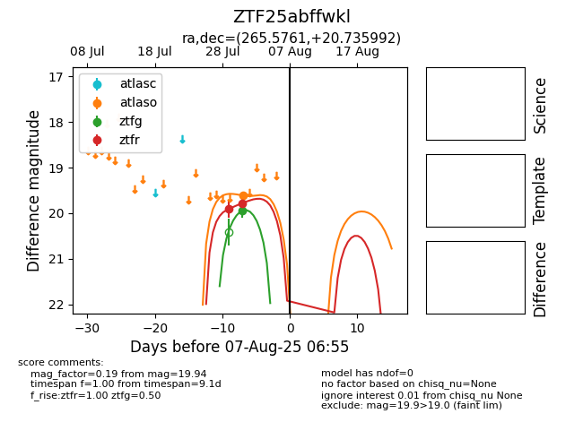

Target ZTF25abffwkl at 2025-08-07 07:30, see:
FINK: fink-portal.org/ZTF25abffwkl
Lasair: lasair-ztf.lsst.ac.uk/objects/ZTF25abffwkl
ALeRCE: alerce.online/object/ZTF25abffwkl
alt names
ZTF25abffwkl (ztf,fink)
coordinates:
equatorial (ra, dec) = (265.5761,+20.73599)
galactic (l, b) = (44.8462,+24.12524)
photometry
last atlaso=19.61, ztfg=19.94, ztfr=19.78
1 atlaso, 1 ztfg, 2 ztfr detections
